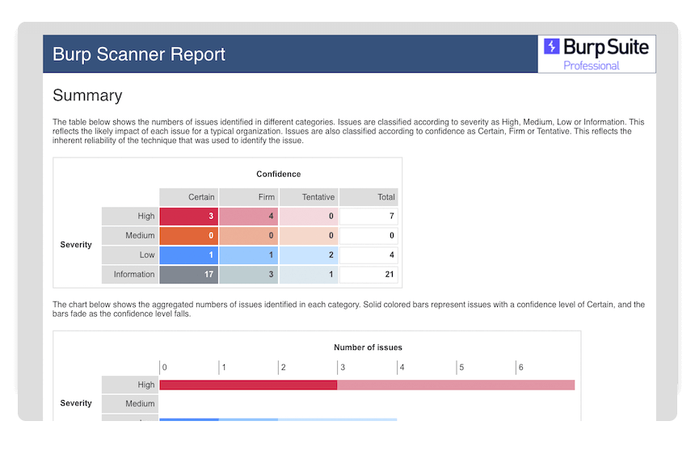

Burp Scannerは、完全に自動化されたスキャナとしてだけでなく、手動テストのワークフローを補助する強力な手段としても使用できます。Burp Scannerが検出できる脆弱性のリストは常に増え続けています。私たちは、世界トップクラスの研究チームと緊密に連携し、既知のバグと新たに発見された脆弱性の両方を発見するための最新技術を常に維持するようにしています。
Webサイトのスキャンには2つのフェーズがあります:
Burp Scannerは、Burp Suite ProfessionalとBurp Suite Enterprise Editionでのみ利用可能です。Burp Suite Community Editionを使用している場合は、このチュートリアルは進められません。
Burp Suite Enterprise Editionのユーザーは、Burp Suite Enterprise Editionによる初めてのスキャン実行のチュートリアルを参照してください。
このセクションでは、自動化された脆弱性スキャンを初めて起動する方法を学びます。
ダッシュボードタブに移動し、新規スキャンを選択します。
スキャンランチャダイアログが開きます。ここでは、Burp Scannerの動作を制御するためのさまざまな設定が行えます。
スキャンするURLフィールドに、ginandjuice.shopと入力します。その他の設定は、とりあえずデフォルトのままにしておきます。
Burp Scannerを使うと、一部のアプリケーションで予期しない影響が出る可能性があります。機能や設定にしっかり慣れるまで、本番以外のシステムだけで使うべきです。管理者から許可されていない限り、第三者のWebサイトに対してスキャンを実行しないでください。
スキャン設定を選択します。ここから、さまざまなユースケースや対象サイトに合わせて、Burp Scannerのさまざまな動作を微調整できます。
プリセットスキャンモードを使用が選択されていることを確認し、軽量をクリックします。軽量スキャンモードは、対象についての非常におおまかな概要をできるだけ素早く把握することを目的としています。このモードでのスキャンは最大15分です。
OKをクリックすると、スキャンが始まります。Burp Scannerは、前のステップで入力したURLからクロールを開始します。
ダッシュボードに、このスキャンの新しいタスクが追加されていることに注目してください。ここに、現在実行中のスキャンフェーズや、送信されたリクエストの数など、重要な情報が表示されます。
スキャンを実行している間に、ステップ5に進みます。
Target > サイトマップタブに移動し、ginandjuice.shopのエントリが追加されていることを確認します。このノードを展開すると、クローラがこれまでに発見したすべてのコンテンツが表示されます。数秒待つと、リアルタイムでマップが更新されていくのがわかります。
ダッシュボードでスキャンの状態を監視します。1～2分後にクロールが終了し、Burp Scannerは脆弱性の診断を開始します。問題が見つかると、ダッシュボードタブの問題アクティビティパネルに表示されます。
問題を選択すると、アドバイザリタブが表示されます。アドバイザタブには、詳細な説明や対策のアドバイスなど、問題の種類に応じた重要な情報があります。その次には、Burp Scannerがこの問題を発見した証拠を表示するタブがいくつかあります。これは通常、リクエストとレスポンスですが、問題の種類によって異なります。
このセクションでは、スキャン結果に基づいてレポートを作成する方法を学びます。
Target > サイトマップタブを開き、https://ginandjuice.shopのエントリを右クリックして、問題 > このホストの問題をレポートを選択します。
使用するファイル形式や、どの程度の詳細情報を含めるかなど、さまざまなオプションをウィザードが案内してくれます。ここではデフォルトのまま、レポートのファイル名と保存場所を入力するよう求められるまで、次へをクリックします。
ファイル選択をクリックして、レポートを保存する場所を選びます。ファイルの名前を入力してください。
適切なファイル拡張子(ここでは.html)を付ける必要があります。
保存、次への順にクリックすると、レポートが生成されます。
Burpブラウザでレポートを開き、内容を確認します。これは、同僚や顧客にスキャンの結果を報告する場合に便利です。
Burp Suiteを使って初めてのスキャンを行い、検出した結果のレポートを作成できました。
次のステップ - Burpについて学習する
次へ